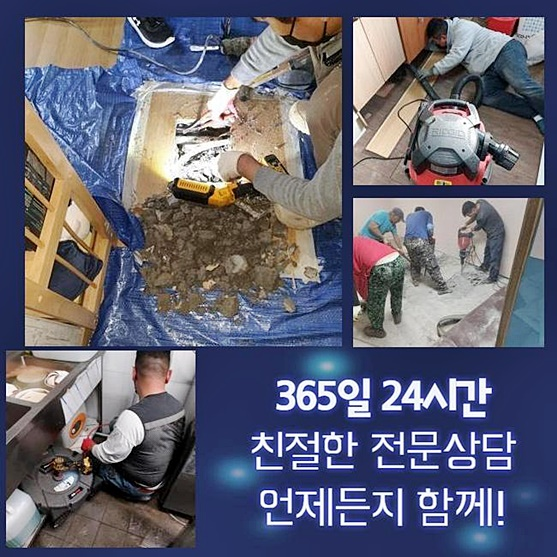
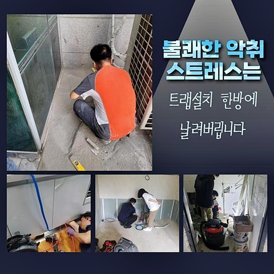
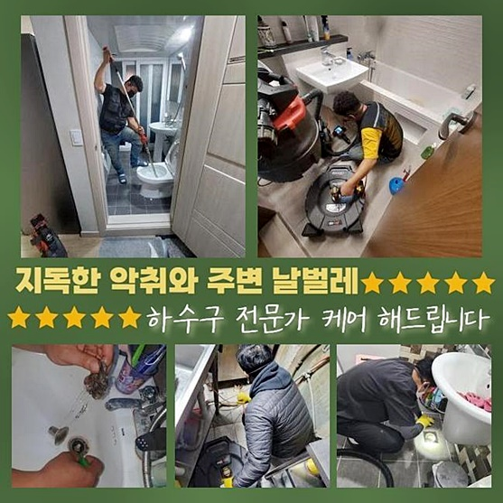
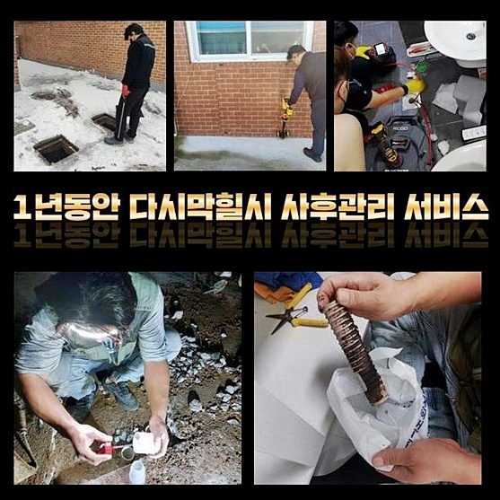
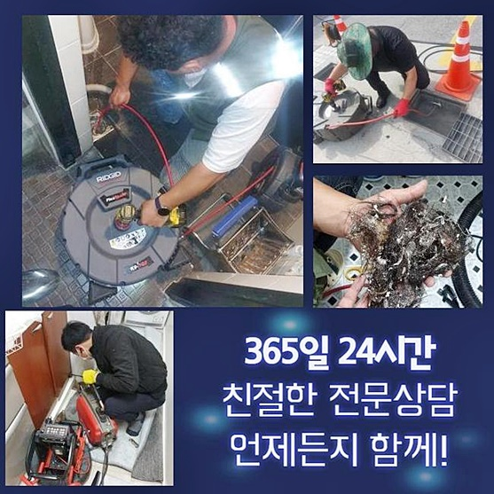
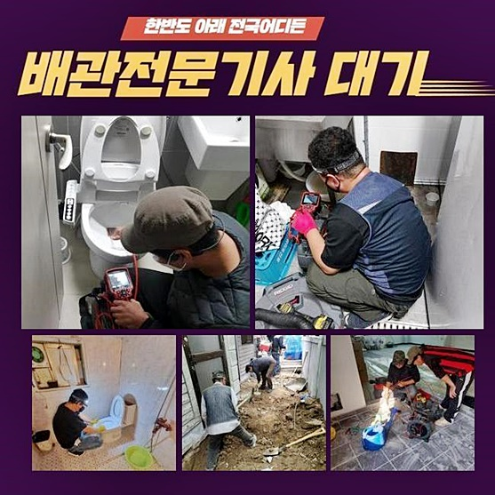
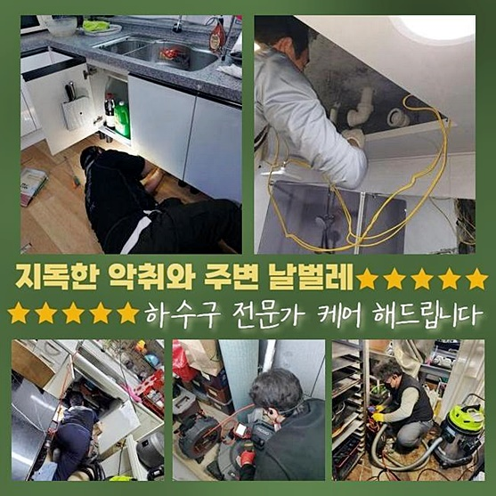

🏠 하남 배알미동대변기막힘 항동 배수로뚫기 배관막힘누수
용인시 처인구 배관막힘 전문 시공 후기

📋 작업 개요
- 위치: 용인시 처인구, 수원시 영통구, 화성시 동탄
- 서비스 유형: 배관막힘, 누수수리, 고압세척, 내시경점검
- 작업 일시:
- 업체명: 하수구수사대 (010-5615-2118)
🔍 문제 상황
하남 배알미동대변기막힘 항동 배수로뚫기 배관막힘누수
반가워요! 신속하게 방문드리는 저희들은 출장금액에 대해 요구하지않고 실패를했을때도 같이적용시켜 수리비청구를 요구하지않죠
저희들을 호출하시는 고객분들을 위하여 12개월동안 as서비스를 진행하고있습니다
하수구시스템이 무너졌을때 여러분은 어떤식으로 해결하고자 하나요
최근들어 방문했었던 작업사례로 막힌배관을 뚫어내는방법을 알려드리려고하니 꼼꼼하게 읽어보신다면 도움될거라고 생각해요
수리난이도가 복잡하다고해서 다른업체에서 포기할때도 있어요
저희업체는 최선을다해 작업하여 해결하고자 애쓰고있죠
의뢰자의 시간에맞춰 출동서비스까지 해드리고있습니다
오늘작업도 무사하게 해결할수있었어요
내방하기전에는 간단한 막힘정도라고 생각했죠
의뢰자가 현장사진을찍어 알려주신걸로 작업하기전에 추측할수있었어요
그렇지만 직접살펴봤더니 연결되어있는 외부배관까지 막혀있는 좋지못한 상황이었죠
내외부하수구를 모두수리하여 처리할수있었네요

🔎 원인 분석
💡 전문가 진단: 정밀 진단 장비를 사용하여 슬러지의 고착 여부를 판명하고 타격/세척 작업을 실시했습니다.
다음장소는 가정집인데 고객님께서 전달주신내용은 욕실배수구쪽 부근에서 물이점점 고이다가 하루지나서 들여다봤더니 역류하며 배수시스템이 멈췄다고 하셨습니다
긴급한 마음으로 뚫는방법을 찾다가 셀프시도를 진행하셨다고 말해주셨죠
무리하게 시도하다가 오물과 이물들이 역류하게되면서 좋지않은냄새까지 발생하여 심각해진것이죠
상황이 심각해졌다보니 하수구업체를 찾으시다가 문의주신겁니다
역류문제는 일반적으로 배관안속에서 오염물들이 유입되고 계속해서 쌓이고쌓여 완전하게 막히는것이죠
막힘을 뚫어내고자 전문기기들을 준비했어요
첫째로 흡입장비를 통하여 배관속에 각종오물을 빼내주는데요
위과정을 우선순위로 진행하지않는다면 확실하게 해결될수가없죠
다음과정으로는 하수도내부의 굳어버린 오염물을 플렉스샤프트로 제거하면됩니다
샤프트장비는 단단히굳어진 오염물을 분해시켜주는 장비입니다
한가지더 필수적인기계를 설명드리도록 하겠습니다
하수관막힘이 발현된지점을 찾기위해선 하수구촬영 카메라장비가 있어야합니다
배관카메라기를 통해서 하수구깊은 위치까지 확인이가능해 정확히 막힌문제를 짚어낼수있어요
배관cctv로 확인을하니 욕실쪽과연결된 메인관에도 문제가있다는걸 확인했습니다

🔧 작업 과정
밖으로이동해서 메인배관을 열어보았더니 오염물이가득차 넘칠것만 같았어요
막히는현상의 요인이었던만큼 스케일링과정을 진행하고자했죠
입구주위에 들어차있는 물을흡입하고나서 내부작업을 진행하기로했죠
제거하다보면 생각과달리 오물의양이 상당하기에 시간이걸릴수 있답니다
하지만 이 과정이 중요한 단계이니 다 빨아들일 수 있도록 했습니다
그제야입구가 점차 보여지기시작하여 하수관내부를 살펴볼수있도록 스프링기계를 활용해서 막힌곳을 통수시켰죠
통수를마치고 고압세척작업을 진행하면되는데 강력한압력으로 해당부위에 물을쏘는것이죠
고압세척장비는 여러도구중 까다로운 기계라고할수있어요
강한물줄기로 발사가되기에 배관손상이 발생할수도있기 때문이랍니다
고압세척이 안전하게 마무리된다면 찌꺼기와 이물들이 깔끔하게 제거된답니다
고착이물을 제거한뒤 반드시 진행해야하는것은 석션기를사용해 잔여물질들을 빨아들이는 과정인데요
스켈링과정을 마친후에는 꼼꼼히세척이 완료됐는지 내시경모니터 화면으로 하수도를 체크해봅니다
잔여이물이 발견되서 재차제거하여 깔끔히 마무리해냈죠
원활하게 배수시스템이 돌아왔는지까지도 확인해드리고있어요
의뢰자와함께 배수상황을 살피고나서야 철수하니 우려마세요
막힘증세를 해결하지못하고 방치하실경우 2차문제로 발발되어 누수문제나 역류문제까지 발현될수있으므로 문제를발견한즉시 대처해보실것을 추천드려요
뾰족한물건들로 하수도를 쑤셔보는건 손상문제를 유발시킬수있으므로 삼가주시는게 좋아요
여러번이나 말했지만 혼자직접 무리하여 배관에손대면 문제현상이 악화될수있으니 미흡한대처는 삼가주세요
다세대로 이루어진 건물과 식당과같은 영업시설에서는 간헐적으로 점검해보는것이 예방해보는게 좋은방법이에요
오늘설명드린 내용같이 확실히 해결을원하시면 막힌이유가 무엇인지 알아낸후 방법을찾는게 중요하겠습니다
하수관막힘을 방치하지말고 전문가를통해 해결해보세요!


✅ 작업 완료
전문가를 호출할때 살펴봐야할 사항이많은데 설명드려보면 전문장비를 최첨단으로 갖추고있는지와 수리비용에 대해서 작업착수전 공개해주는지 확인을 해보셔야해요
저희는 작업장소에 방문한뒤 문제를파악하여 비용에관해 알려드리고 고객님이 동의를해야지만 수리를 진행하기에 안심해도 괜찮아요
1시간안으로 내방이가능할뿐 아니라 작업과정에있어 분명히 보여드리기때문에 우려마시길 바래요
저희업체로 의뢰주시면 신뢰해주신만큼 확실하게작업해 성공하는결과로 보여드릴게요!
이것외에도 궁금한게 있다면 편하실때 아무때나 전화주셔서 여쭈시면 상세히 응대해드릴게요
이번에 설명드린 내용들이 도움이 되었을지는 모르지만 이만 마치도록할게요! 감사합니다!




⚠️ 하수구 배관 막힘 예방 및 관리 가이드
- ✅ 머리카락, 비닐, 물티슈 등 물에 분해되지 않는 이물질은 절대 흘려보내지 마세요.
- ✅ 기름기 많은 식기는 설거지 전 키친타올로 먼저 기름때를 닦아내세요.
- ✅ 주기적으로 배수구에 뜨거운 물을 가득 부어주어 유지방 고착을 방지하세요.
- ✅ 작업 후 1년 이내 재발 시 무상 A/S 보증 서비스를 제공합니다.
💡 핵심 정리
- 확실한 장비 작업(내시경 점검 및 샤프트 스케일링)으로 원인을 뿌리 뽑습니다.
- 작업 후 1년 이내에 동일한 부위 재발 시 100% 무상 A/S 서비스를 보장합니다.
- 서울 · 경기 · 인천 전 지역에 24시간 언제든 긴급 출동할 수 있도록 항시 대기 중입니다.
❓ 자주 묻는 질문 (FAQ)
🚨 용인시 처인구 배관막힘 문제로 고민이신가요?
정확한 원인 진단과 확실한 시공으로 재발 없는 해결을 약속드립니다.
24시간 긴급 출동 | 서울 · 경기 · 인천 전지역 | 1년 내 재발 시 무상 A/S